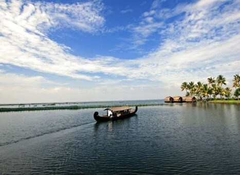

Malarikkal Village Tourism

Nestled far away from the chaos of urban life, there exists a quaint hamlet in the heart of Kottayam district. All it offers those who stumble upon it are a soothing experience of village life amidst endless paddy fields. Its massive stretches of backwaters and intrinsic natural beauty are slowly attracting tourists who seek a rendezvous wholly detached from their routine. Malarickal or Malarikkal is a jewel that people in Kerala are only slowly awakening to themselves.
It isn’t just the emerald of its backwaters that awaits you here, as Malarickal lures you in with breathtaking shades of pink as well. The water lilies (Nymphaea Stellata or ambal in local parlance) greet the terrain during the end of the monsoon rains, which usually occurs annually between September and October. A carpet of pleasant pink envelops the entire region in a breathtaking formation that is hard to explain with mere words. They spread out over 600 acres of land, and locals advise that the best time to witness this phenomenon is morning and evening.
How to Get Here
Nearest railway station: Kottayam, around 9 km Nearest airport: Cochin Interanational Airport, around 85 km
Ilaveezha poonchira

Ilaveezha poonchira, a hill station near Melukavu Mattom, 60kms from Kottayam is gaining tourist importance.
Located among three beautiful hillocks Mankunnu, Kudayathoormala and Thonippara, Poonchira is a place of picturesque charm. Legends say that the pool here was a bathing place for Panchali the legendary heroine of Mahabharata. The D.T.P.C. is developing this place into a trekking spot. A tourist bungalow with rooms and dormitory to accommodate 15 people has been constructed.
The beautiful valleys of Poonchira are spread across thousands of acres. The verdant landscape punctuated by the gigantic hills, each rising to around 3200 ft. is an ideal place to unwind. During the monsoons when the valley fills up to form a scenic lake, this place unveils yet another beautiful slice of nature. Ilaveezha poonchira means valley where leaves don’t fall and is named so because the place has no trees. This is also one of the best places in Kerala to witness both the sun rise and sunset.
How to Get Here
Nearest airports are Cochin International Airport, Ernakulam District (76.9 Km)& Trivandrum International Airport, Thiruvananthapuram District (186.6 Km).Nearest Railway Station is Kottayam (55 Km)
Vembanad Lake
Kottayam has a vast network of rivers and canals, which empty into the great expanse of water called the Vembanad Lake, a fast developing backwater tourism destination. Vembanad Lake is having 83.72km length and 14.48km width. Traditional Cargo boats called Kettuvallams are modified into Cruise boats and House boats, with all basic facilities like kitchen, toilet, bathrooms, sit outs etc. These boats gracefully move around the back waters, providing facilities to tourist to enjoy the beauty of the Vembanad Lake in a relaxed pace. The Kumarakom tourist village offers house boat cruises and holiday packages.
In the Vembanad Lake there is a small beautiful island called Pathiramanal or the Midnight sands. This lonely island in the Vemabanad Lake is accessible only by boat.In the festive months of August and September, the rivers in and near Kottayam are turned into festival centres. The serene lakes come alive during Onam with a spectacular water regatta – the snake boat races.
How to Get Here
Nearest airports are Cochin International Airport, Ernakulam District (76.9 Km)& Trivandrum International Airport, Thiruvananthapuram District (186.6 Km).Nearest Railway Station is Kottayam (55 Km)
Vagamon

Situated 64kms from Kottayam, this enchanting hill station at an elevation of 1100 metres above sea level is a trekker’s paradise. This enchanting hill station on the Idukki – Kottayam border dotted with tea gardens and meadows, will soon be one of India’s foremost Eco tourism projects. The breeding centre of the Kerala Live stock Board is located here.
How to Get Here
Nearest airports are Cochin International Airport, Ernakulam District (76.9 Km)& Trivandrum International Airport, Thiruvananthapuram District (186.6 Km).Nearest Railway Station is Kottayam (55 Km)